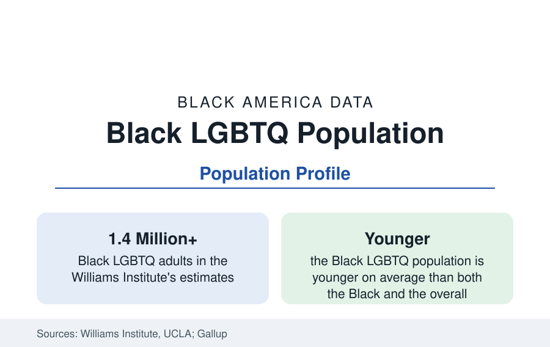

Black Census
Black LGBTQ Americans: The Williams Institute Population Data
An estimated 1.4 million Black adults identify as LGBTQ in the Williams Institute's data — about one in eight Black adults. The demographic profile.

An estimated 1.4 million or more Black adults identify as lesbian, gay, bisexual, transgender, or queer in the Williams Institute's analyses of the federal survey data — roughly one in eight Black adults, at rates comparable to the national identification rates Gallup tracks (which have risen across generations to about seven to eight percent of all adults, and far higher among the young). This article reports the demographic research on the Black LGBTQ population: its size, geography, families, and economic data.
Counting: The Survey Basis
The estimates rest on the survey infrastructure the Census Bureau and CDC built over the past decade: the Behavioral Risk Factor system's sexual orientation and gender identity module (adopted by most states), the National Health Interview Survey's orientation items, Gallup's daily tracking, and the Census Bureau's own Household Pulse Survey — the first Census Bureau vehicle to carry orientation and gender identity items, whose editions have placed the Black LGBTQ adult population consistently in the range the Williams Institute's models refine. The methods literature is candid about the counts' nature: identification questions measure identity (not behavior or attraction), rates rise with each generation's willingness to answer, and the transgender population estimates (the Williams Institute places Black adults among the racial groups with the highest likelihood of identifying as transgender in the BRFSS-based models) carry the widest uncertainty bands in the file.
Geography and Demography
The Black LGBTQ population's geography follows Black America's with distinctive concentrations: the District of Columbia holds the highest share among jurisdictions in the Williams Institute's state tables (the capital's Black population being what the DC profile describes), and the large Black metros — Atlanta (long described in the research as a center of Black LGBTQ life, with the organizational density to match), New York, Los Angeles, Chicago, Houston, and the Bay Area — hold the largest counts. The demography is younger than either parent population's: median ages in the survey data run well below the Black adult median, reflecting the generational identification gradient, and the gender distribution differs from the overall LGBTQ population's (bisexual identification is the modal category among Black LGBTQ adults in the Gallup cross-tabs, and Black LGBTQ women outnumber men by a wider margin than in the general figures). The Southern share is, as ever in this reference, the plurality: most Black LGBTQ Americans live in the South.
Families and Children
The family data correct the popular picture with paperwork: Black LGBTQ adults are raising children at the highest rates of any racial group in the Williams Institute's family analyses — roughly two in five Black LGBTQ adults report a child in the household in several survey editions, through birth, adoption, foster care, and kinship — and same-sex couples' Census tabulations show Black couples' child-rearing rates above the all-couples average for same-sex households. The household structures layer onto this reference's family files (the grandparents and multigenerational profiles' households include LGBTQ members and children throughout), and the foster and adoption data record Black LGBTQ adults as a resource the child-welfare system's own recruitment literature names. Marriage data since nationwide recognition show Black same-sex couples marrying and counted in the ACS couple files, at rates the demographers track converging with the population's.
Economic and Health Data
The economic data describe the intersection's compounding: the Williams Institute and the Census Pulse analyses place Black LGBTQ adults' poverty, food insufficiency, and housing instability rates above both the Black overall and LGBTQ overall figures — the file's signature finding — with employment discrimination experiences and wage data in the research surveys layered beneath. The health data similarly intersect the public health section: HIV's burden among Black gay and bisexual men is that profile's central datum; mental-health indicators in the survey data (the Pulse's anxiety and depression screens) run elevated for the LGBTQ population with treatment-access gaps the mental-health profile's workforce data predict; and the aging file is emerging — the first generation of openly LGBTQ elders, Black elders among them, entering the senior systems whose data this reference tracks, with the caregiving structures of chosen family entering the formal data behind them.
Reading the Black LGBTQ Data
The Black LGBTQ population is not a footnote to two larger populations but a population in its own right — 1.4 million adults, raising children at the highest rates in the file, concentrated in the same Southern geography as Black America itself, and recorded in the federal data with a clarity that is itself recent. The census of a previously uncounted population always reads like a discovery; the demographers' point is that the population was always there — the counting is what is new.
More in Black Census
The Black Population of the United States: Size, Definitions, and Distribution
The Black population of the United States totals 52.8 million — 15.4 percent of the nation. How the Census Bureau defines and counts the population, and where it lives.
Black Median Household Income in the United States
Black median household income stands at $56,490 in the Census Bureau's annual income report — how the figure is measured, how it compares, and what drives it.
The Black Poverty Rate: Levels, Children, and the Long Trend
The official Black poverty rate is 17.1 percent — against 11.1 percent nationally and 7.7 percent for non-Hispanic White Americans. How poverty is measured and what the data show.
Source: Williams Institute, UCLA School of Law, LGBTQ population research; Gallup LGBTQ identification series; U.S. Census Bureau Household Pulse Survey.